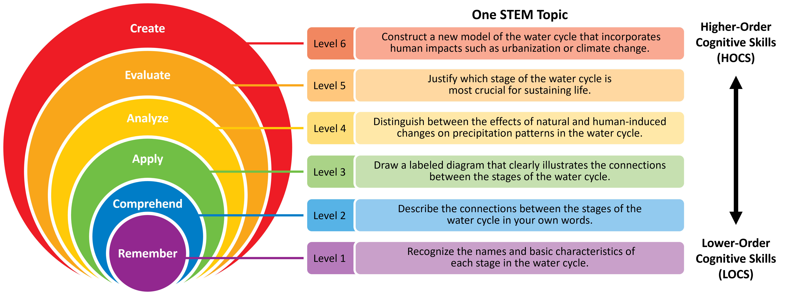
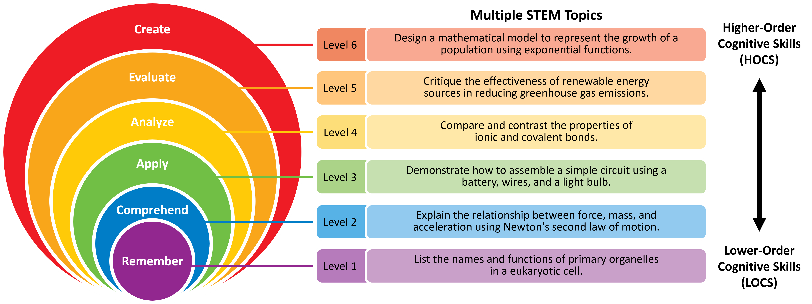

Course Design
Estimated time to complete: 60 minutes
Module Learning Objectives
By the end of this module, you will be able to...
- Describe the idea of backward design and consider how to apply it to your own course.
- Explain how backward design can support an inclusive learning environment.
- Practice applying backward design to your course by drafting a course map.
- Practice writing learning goals and objectives for your course that incorporate the six facets of science and inclusive learning.
- Evaluate the level of cognitive engagement (Bloom’s level) for learning objectives.
- Evaluate the extent to which learning goals and objectives support inclusive learning.
Course Design Defined
Course design is an intentional, reflective process of developing effective learning materials and environments that encourage students to develop their skills and knowledge. In designing a course, we set goals and adopt strategies for students to achieve learning objectives.
Why Course Design?
The aim of course design is to create directed, scaffolded learning experiences in which students engage repeatedly with the course material, each other, and the instructional team (Fink, 2013; Freeman et al., 2011; Wiggins & McTighe, 2005; Wiggins & McTighe, 2011).
Scientific teachers are designers: You select scientific content with purpose, organize it in a way that scaffolds learning, and evaluate how well it worked. And like in any type of design—from technology, to paintings, to skyscrapers, and yes, to science courses—you make decisions that influence outcomes.
Your decisions help you achieve your aims and support student learning, within your constraints. You make decisions about your teaching before the semester begins, while teaching a unit, and after each term ends. From designing new courses to overhauling an old design you inherited to continuously improving your teaching, as a scientific teacher you are as much a designer as you are a scientist and an educator.
In all three of these roles—teacher, scientist, designer—you hold a number of commitments that inspire and inform how you carry out your course (Flanagan et al., 2005; Flanagan and Nissenbaum, 2014; Belman et al., 2009). As an instructor, you are likely committed to engaging students in meeting the learning objectives of your courses. As a scientist, you may be committed to a certain level of rigor and experimentation in your work. As a scientific teacher you may be committed to having your students experience scientific discoveries through those lenses. And as a designer, you plan, you adapt, you iterate.
Only you can know what your own commitments are, and only you can know the ways they:
- Shape what you aspire to achieve in your work as a scientific teacher
- Motivate you to pursue your own degree of quality
- Guide you to explore and weigh between design alternatives
- Inform how you engage with your students
- Define how you want students to engage with the content and each other
This module asks you to reflect on your commitments and apply a course design framework called “backward design”. Other modules provide suggestions for activities, assessments, and other considerations to fill out the course learning experiences.
Effective Design of STEM Courses
Effective design principles incorporate balance and alignment, while focusing on the end product and user experience. Applied to STEM courses, effective design principles focus on learning science and the learners by:
- Setting learning objectives that represent the facets of science
- Aligning activities and assessments with the objectives
- Considering factors that influence the student experience, such as pacing and accessibility
Consider these Scenarios
Read each of the following vignettes, and then rate them based on the effective design principles. To what extent (0=not at all; 1=to some extent; 2=a lot) does each vignette:
- Emphasize learning the facets of science
- Clarify what is expected of students
- Remove barriers that could preclude some students from accessing resources
Click here to show Vignette #1
My physics course uses the premiere 300 textbook that covers all the founding fathers' discoveries. I give two-hour multiple-choice exams from 6-8pm on Tuesdays every 5 weeks. The final is cumulative, and all exams are graded on a curve. Content is delivered through the textbook and my lectures, which are not recorded. Students have to come to class if they want to learn the material. There are no worksheets or homework assignments because I'm not going to tell them what's important and what to study. I pride myself in weeding out students who aren't cut out to be physics majors. We only want the best of the best in our program.
Click here to show Vignette #2
Students in my chemistry course know what is expected of them. The learning objectives are transparent, and we do a variety of student-centered activities in class that help them practice skills related to the objectives. We ask and answer scientific questions with relevance to their lives, and I highlight the work of diverse scientists whenever possible. We connect the science to historical legacies of exclusion and privilege in science. Everything for class is on our learning management system, which ensures students can find materials even if they miss class. I have built a lot of structure in my course such as pre-class readings with quizzes and post-class reflection assignments to help students monitor and progress their learning. I use frequent low-stakes assessments with timely feedback, and I make sure to tell them it's ok to make mistakes. I encourage students to ask questions and to work together to generate their own understanding. I really love talking with my students. They bring so much curiosity and enthusiasm to the class.
Evaluate Your Course
Call to mind a course you are teaching, have taught, or are planning to teach.
To what extent (0=not at all; 1=to some extent; 2=a lot) does your course:
- Emphasize learning the facets of science
- Clarify what is expected of students
- Remove barriers that could preclude some students from accessing resources
What areas would you like to change or improve?
A Framework for Course Design
Understanding by Design® and Backward Design
Understanding by design® is a long-standing, intentional design framework that focuses on student learning and understanding (Wiggins & McTighe, 2005; Wiggins & McTighe, 2011). It asks instructors to define what learning and understanding mean for their course context (e.g, student preparation, course level, and content) and then design curriculum “backward” from there.
A three-step process known as backward design supports Understanding by Design. It is called “backward” because it starts with the end goals in mind and then designs learning experiences that guide students toward those goals. In contrast, a “forward” approach focuses on covering content, delivering instruction, and then developing assessments based on what has been taught. Because learning outcomes come last, the “forward” approach may lead to weak alignment between learning goals and assessments, leaving students to guess what is important and where to focus their study efforts.
The process of backward design is meant to be flexible and iterative, not prescriptive. Framed within the context of STEM, the process of backward design typically involves three stages:
Identify desired results. What should students know, understand, and be able to do? Which facets of science should students understand, and to what level of competency? What enduring understandings or transfer of knowledge are desired?
Action: Establish learning objectives based on the facets of science.
Determine acceptable evidence. What evidence will demonstrate progress toward understanding those facets of science at those levels of competency? How will student performance be evaluated in fair and consistent ways?
Action: Create equitable assessments that measure progress toward the objectives.
Plan learning experiences and instruction. What activities could engage students with the facets of science and scaffold their learning? How will learners be supported as they come to understand important ideas and processes? What activities, sequence, and resources are best suited to accomplish the desired goals?
Action: Design inclusive learning experiences that support learners in understanding the facets of science.
Course Design in Practice
Step 1: Identify desired results.
Learning goals and objectives are two key components of instructional design that guide the development of curriculum and assessments.
Learning goals emphasize enduring understanding. These are broad descriptions of what students will understand and learn as a result of engaging with the curriculum. They describe the overall purpose of an instructional unit with respect to the facets of science, inclusive learning expectations, or any other aspiration for the curriculum. Learning goals are often linked to the even broader goals of an academic program.
For example:
Goal: Understand the impact of climate change on agriculture and health.
Learning objectives are action-oriented, measurable statements that state what knowledge and skills students are expected to demonstrate as a result of engaging with the curriculum. Objectives are more specific than learning goals and are designed to be achievable within a particular time frame and level of instruction.
For example:
Objective: Compare and contrast the role of soil vs. air as a carbon sink.
TODO activity name
Which of the following statements are learning goals, and which are learning objectives?
- Code, test, and debug simple algorithms using a programming language such as Python.
- Understand how sustainable engineering practices affect the environment.
- Appreciate the relevance of physics in technology, engineering, and medicine.
- Apply safe techniques for preparing and handling laboratory chemicals.
- Identify and manipulate algebraic expressions, including equations, inequalities, and functions.
- Understand the relationship between physical structure and physiological function at the cellular and systemic levels.
Writing Effective Learning Goals
Learning goals describe broad outcomes at the course-level. An instructor may have only a few learning goals for an entire course. Think about the main ideas listed on your course website or the top of your syllabus—they are probably goals.
Because a goal is not directly measured by a single assessment question, it can use terms such as understand and appreciate, which should be avoided for learning objectives.
To write an effective learning goal, we suggest the following:
- Think about long-term transfer goals. What would you want students to be able to do with the knowledge they gain from the course?
- Consider enduring understanding. What would you want your students to remember or understand 5 years from now?
- Goals can be ambitious and even philosophical. They communicate that "big picture" feeling to the students.
- Write goals in broad terms but with enough specificity to provide purpose and direction for instructional design.
For example:
Course Goals:
- Students will understand the water cycle as a complex process that involves the continuous movement and transformation of water through the environment.
- Students will recognize the importance of the water cycle in sustaining life on earth and the implications of human activity on this process.
- Students will develop critical thinking skills to analyze and evaluate the impact of changes in the water cycle on ecosystems and human societies.
TODO activity name
The following learning goals come from Professor Nguyen's earth science syllabus:
- Students will explain the causes and effects of plate tectonics and how this process has shaped the surface of the Earth over millions of years.
- Students will explore the structure and composition of the Earth's interior and the relationship between geologic features such as mountains, volcanoes, and earthquakes.
- Students will understand Earth's natural systems.
Write feedback you would give to Professor Nguyen if they were your peer, such as:
- Areas that are too specific or too broad.
- If a statement is a learning objective, not a goal.
- Modifications to make the statement into a more effective learning goal.
TODO above title + Now You Try
Call to mind a course you are teaching, have taught, or are planning to teach.
Choose one:
- Select an existing learning goal from your course. Does it communicate enduring understanding and the facets of science? How would you update it, if needed?
- Write a new learning goal for your course that communicates enduring understanding and one or more facets of science.
Writing Effective Learning Objectives
Learning objectives are more measurable than learning goals and describe specific outcomes at the topic level.
A general suggestion is to have two to five learning objectives per topic, depending on its complexity. Although learning objectives are often content-focused, they can also include gaining competence in a new skill or developing a certain type of knowledge or expertise. Learning objectives should be designed to be achievable and realistic, but also challenging enough to promote growth and progress.
To write an effective learning objective, we suggest the following:
- Start with an action verb. An effective learning objective should begin with a strong verb that describes the specific competency that students are expected to demonstrate. Examples of commonly used verbs include "identify," "analyze," "describe," "compare," "explain," and "design."
- Be specific. The objective should clearly state what the student is expected to learn or achieve. Avoid vague or overly general language that could be open to interpretation.
- Be concrete. The objective should be written in a way that allows the student's progress or achievement to be measured directly. Use language that makes clear how knowledge is being assessed.
- Be realistic. The objective should be achievable within the context of the course unit and based on a reasonable level of prior knowledge or skill.
- Align with learning goals. The objective should align with a larger learning goal.
Bloom's Taxonomy
Bloom’s Taxonomy categorizes several domains of educational goals based on the level of complexity and specificity (Bloom, 1956; Anderson and Krathwohl, 2001) and can be helpful in writing learning objectives. The taxonomy of the cognitive domain consists of six levels ranging from lower-order cognitive skills (LOCS) to higher-order cognitive skills (HOCS):
- Remember: Can the learner recall or retain the information? Action verbs: define, duplicate, identify, list, memorize, name, recall, recognize, repeat, state
- Comprehend: Can the learner explain ideas or concepts? Action verbs: classify, describe, discuss, explain, locate, paraphrase, report, select, summarize, translate
- Apply: Can the learner use information in a new way? Action verbs: choose, demonstrate, dramatize, draw, employ, execute, illustrate, implement, interpret, operate, perform, sketch, solve, use
- Analyze: Can the learner distinguish between different parts? Action verbs: compare, contrast, deconstruct, differentiate, discriminate, distinguish, examine, experiment, infer, investigate, organize, predict, question, test
- Evaluate: Can the learner justify a stand or decision? Action verbs: appraise, argue, assess, criticize, critique, defend, judge, justify, prioritize, support, value
- Create: Can the learner create a new product or point of view? Action verbs: assemble, build, compose, construct, design, develop, devise, formulate, invent, plan, produce, write


In designing learning objectives, select action verbs that communicate the desired cognitive level. Importantly, students do not necessarily have to complete LOCs before moving to HOCs. In fact, asking questions, making assessments, or proposing hypotheses can encourage a growth mindset and readiness to learn the facts or concepts.
TODO title
For each assessment prompt below, identify whether it targets a lower-order cognitive skill (LOCS) or higher-order cognitive skill (HOCS):
- Design an experiment to test one of Newton's laws of motion, including the necessary equipment, data collection methods, and analysis.
- Use Figure 3 in the textbook to draw your own model that demonstrates one or more of Newton's laws of motion, including the necessary variables and assumptions.
- Define Isaac Newton's three laws of motion, including examples of each.
- Critique the validity of an experiment or study that uses Newton's laws of motion to explain a physical phenomenon, including its limitations and potential sources of error.
- Explain the difference between mass and weight.
- Considering the forces acting on an object in motion (direction and magnitude), predict the resultant motion of the object using Newton's laws.
TODO title
Convert this LOCS into a HOCS:
Label the parts of a plant cell and recall their functions, including the cell wall, nucleus, chloroplasts, and mitochondria.
TODO above title + Now You Try
Call to mind a course you are teaching, have taught, or are planning to teach.
Choose one:
- Select an existing learning objective from your course. Does it communicate the desired cognitive level and incorporate one or more facets of science? How would you update it, if needed?
- Write a new learning objective for your course that communicates the desired cognitive level for one or more facets of science.
Step 2. Determine acceptable evidence.
Once you have learning objectives that are aligned to learning goals, the next step is to determine what evidence will acceptably demonstrate that students are progressing toward—and eventually succeeding in accomplishing—the desired outcomes. This requires that we design assessments that are aligned to the learning objectives.
Why is this such a critical step? Because assessment drives learning. When students have opportunities to practice the material they are learning, they are better able to diagnose their understanding and can change their study strategies, if necessary. These strategies are effective in improving learning gains (Hartwig and Dunlosky, 2012; Sebesta and Speth, 2017). Misalignment between learning objectives and assessments can negatively impact student performance (O'Neill, et al., 2010). This creates uncertainty for students about where to focus their study efforts, which is the opposite of an inclusive learning environment.
Imagine studying for an exam by solving problems and designing potential experiments, only to find that the exam is all memorization. A student may rightfully feel frustrated, thinking they "wasted time" studying the wrong material.
Now imagine the opposite scenario, where a student presumes the exam will have lower-order cognitive questions, but the exam has mostly higher-order cognitive questions. The student is unlikely to perform well and will be frustrated that the course materials did not adequately prepare them for the exam.
In both cases, the students’ study strategies are misaligned with the objectives of the exam. When students have the chance to practice the skills they are expected to learn, and those are the skills on which they are tested, it creates a less frustrating and more equitable learning environment for everyone.
Step 3. Plan learning experiences and instruction.
Now that learning goals, learning objectives, and assessments have been addressed, it's time to design the activities that will bring the facets of science to life. We will explore developing activities in more detail in the Learning Experiences module. For now, we'll highlight a few key ideas.
What students practice (in-class activities) should align with assessment questions to ensure students have an opportunity to practice and eventually demonstrate proficiency with the intended learning objectives. For example, it would be unfair to ask students to analyze graphs on an exam if students had never practiced analyzing figures during class or on homework assignments. An instructor cannot conclude how well their curriculum advanced students' abilities to analyze graphs based on exam performance. Since the students did not have any opportunities to practice, their exam performance is based on prior knowledge, skills, and experiences, not from this curriculum.
Let's look at an example of a learning objective and assessment question:
Learning objective: Students will be able to explain the connections between the various stages of the water cycle.
Assessment question: In what ways does the stage of infiltration rely on the previous stages of the water cycle, like precipitation and surface runoff?
What might be an appropriate activity for students to gain practice toward answering the assessment question? Some options might be:
- Students construct a diagram that shows each stage of the water cycle. They label each stage and explain how water moves through the cycle.
- Students watch a video of someone conducting an soil absorption experiment using sand, gravel, and clay. Students discuss how much water is absorbed from the simulated precipitation and simulated runoff.
- Students design an experiment to measure how much water is absorbed by different soil types.
- Students compare and contrast how the water cycle varies depending on the climate, such as a tropical rainforest versus a desert.
We will practice writing assessments and creating learning experiences in the modules about Learning Experiences and Summative Assessment, so hold onto the learning objective(s) you wrote!
Step 4. Check alignment within curriculum and values.
Curriculum alignment is an inclusive learning practice. Learning objectives, assessments, and learning experiences each communicate what is important and valued. When these three areas work together, they:
- Elucidate expectations
- Show a pathway to get there
- Provide assurance when students are on the path
- Provide information to help them change course if they are off the path
Backward design is an iterative process. Keep checking how the objectives, assessments, and learning experiences relate to each other, and adjust as you go along.
Reflect on Your Design Decisions and Design Commitments
Effective teaching is intentional, inclusive, and iterative. And being intentional involves being aware of both your design process and everything that shapes, motivates, guides, and informs it.
Take a moment to recall and list design decisions you have made while planning your course(s).
Which decisions stand out? What decisions have you made that were unlike what your own teachers made when you were a student?
Consider why you made each decision.
What does it illuminate about the commitments you already bring to your teaching and to your science? List a few commitments that illuminate this way, then compare to our list of commitments below.
Click to show the commitments of the authors of the Scientific Teaching Course
As we (the authors) reflected on our own course design decisions throughout our own histories as teachers, we came to the following list of commitments that shape our work.
What from our list resonates with your own experiences? What other commitments does this bring to mind that are relevant to, inspire, or inform how you carry out your own teaching?
- Commitment to our students as individuals, whole persons, and fellow humans
- Commitment to increasing diversity in STEM
- Commitment to the purposes of education
- Commitment to advancing discovery and the purposes of science
- Commitment to inclusive learning environments
- Commitment to growth mindset
- Commitment to our college programs
- Commitment to creating and iterating quality curriculum
- Commitment to achieving our learning objectives
- Commitment to the hallmarks of a CURE
- Commitment to our careers
- Commitment to wellbeing in work and life
- Commitment to our personal and professional identities
- Commitment to our values, beliefs, and principles
- Special commitments in concerning times: various commitments that arose from specific needs and conversations at a specific moment in time, e.g., COVID-19, social unrest, wars at home and abroad, Title IX cases, and advancements in artificial intelligence
Step 5. Incorporate equity and access.
Providing access to resources is fundamental to addressing inequities, because it ensures that course structures, artifacts, and the environment do not preclude anyone from learning. However, the mere existence of a resource does not by itself lead to equitable and inclusive outcomes.
Students with disabilities face many challenges when seeking accommodations in higher education (Gin et al., 2020). An accessible course design reduces the need for accommodation, alleviates the burden and stigma associated with students seeking accommodations, saves time for educators, and diminishes the cost associated with providing individual accommodations. Importantly, accessibility improves educational outcomes for all learners by making sure that educational materials and resources are available and usable by everyone, regardless of their individual needs.
Universal Design for Learning (UDL) guides educators to create accessible course materials and flexible and inclusive learning experiences that meet the needs of all learners, regardless of their abilities or background (CAST, 2018).
UDL aims to change the design of the environment rather than to change the learner. By adopting the principles of UDL, an instructor can build an inclusive course from the outset. The UDL guidelines (CAST, 2018) encompass three key principles: providing multiple means of engagement, representation, and action and expression. Some examples include:
- Physical accessibility: Make physical spaces and materials accessible, such as by providing wheelchair ramps, captioning videos, and offering alternative formats of textbooks.
- Digital accessibility: Design digital content and technologies that are compatible with assistive technologies, such as screen readers and text-to-speech software.
- Social accessibility: Use inclusive language, accommodate different communication styles.
Summary of Course Design
- Backward design is an approach to course or curriculum design that involves starting with the end goals or objectives and then designing assessments and activities that align with those goals.
- Learning goals and learning objectives are the desired results—statements that explain what learners are expected to achieve—but they differ in their level of specificity and scope. Both are informed by enduring understanding and the future ability to use the knowledge.
- Bloom's Taxonomy is a framework for categorizing educational goals and objectives into a hierarchy of six levels, ranging from simple recall of facts to complex, analytical thinking. By using Bloom's Taxonomy to guide learning objectives, educators can design learning experiences that promote deeper understanding and critical thinking.
- Learning objectives, assessments, and learning experiences communicate what is important and valued. Their alignment with each other leads to an inclusive learning environment.
Takeaways from Course Design
Identify two key takeaways that resonate most with you after completing this module.